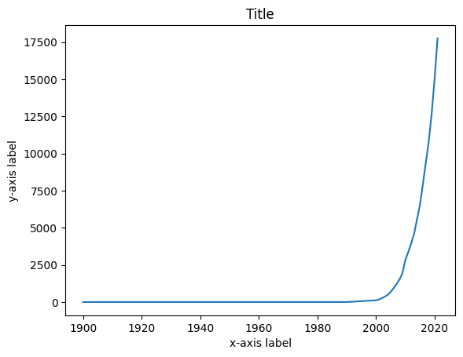
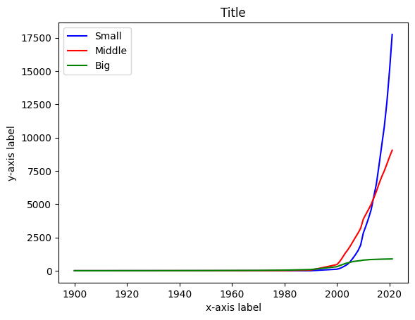

Line chart 2 – data from a column
Contents
Line chart 2 – data from a column#
This template is made for you to customize.#
If you want to work with a specific column in your data set, or maybe even several columns, here is a simple way to plot a line chart from a column. In this example we use a data set from here, which shows the number of near-Earth asteroids observed since 1900 and their size categories.
Go ahead and use this template if you want to make a line chart from a row of your data file (or you can use the example data set). You just have to replace the data set and variable names, and add some text. If you have any problems and you cannot find an answer from Google, please do contact us! We are happy to help you.
# Import libraries
import pandas as pd
import matplotlib.pyplot as plt
# Read csv file and skim it over, looks clean to me!
asteroids = pd.read_csv('https://raw.githubusercontent.com/opendata-education/Tyopajat/main/materiaali/data/near-earth-asteroids-discovered-over-time.csv')
asteroids.head()
| Entity | Code | Year | smaller_than_140m | between_140m_and_1km | larger_than_1km | |
|---|---|---|---|---|---|---|
| 0 | World | OWID_WRL | 1900 | 0 | 0 | 1 |
| 1 | World | OWID_WRL | 1910 | 0 | 0 | 1 |
| 2 | World | OWID_WRL | 1920 | 0 | 0 | 3 |
| 3 | World | OWID_WRL | 1930 | 0 | 0 | 5 |
| 4 | World | OWID_WRL | 1940 | 0 | 1 | 8 |
# Prepare the data for x-axis, in this case we take the values from 'Year' column into a variable 'years'
# Put the header of the column you want inside the square brackets
years = asteroids['Year']
years
0 1900
1 1910
2 1920
3 1930
4 1940
5 1950
6 1960
7 1970
8 1980
9 1990
10 2000
11 2001
12 2002
13 2003
14 2004
15 2005
16 2006
17 2007
18 2008
19 2009
20 2010
21 2011
22 2012
23 2013
24 2014
25 2015
26 2016
27 2017
28 2018
29 2019
30 2020
31 2021
Name: Year, dtype: int64
# Prepare the data for y-axis
# Let's pick the amount of small asteroids
small = asteroids['smaller_than_140m']
# Plot line chart with command plt.plot(x,y)
plt.plot(years, small)
plt.title('Title')
plt.xlabel('x-axis label')
plt.ylabel('y-axis label')
plt.show()

Plotting multiple lines in one graph#
# Prepare the rest of the data for y-axis, different lines to different variables
middle = asteroids['between_140m_and_1km']
big = asteroids['larger_than_1km']
# Plot all three lines, add colors and names for the lines
plt.plot(years, small, color='blue', label='Small')
plt.plot(years, middle, color='red', label='Middle')
plt.plot(years, big, color = 'green', label='Big')
plt.title('Title')
plt.xlabel('x-axis label')
plt.ylabel('y-axis label')
plt.legend() # Prints names for the lines
plt.show()

Plotting cumulative line chart#
Sometimes things are easier to visualize with a cumulative chart. It can be done with stackplot command from Matplotlib library.
fig, ax = plt.subplots() # You need this line if you want to have the cropping at the bottom line
plt.stackplot(years, big, middle, small, labels=['Over 1 km','Under 1 km, Over 140 m','Under 140 m'])
plt.legend(loc='upper left') # Forcing legend to show in the upper left corner
plt.title('Title')
plt.xlabel('x-axis label')
plt.ylabel('y-axis label')
ax.set_xlim(1990, 2021) # Cropping x-acis to show years 1990 - 2021
(1990.0, 2021.0)